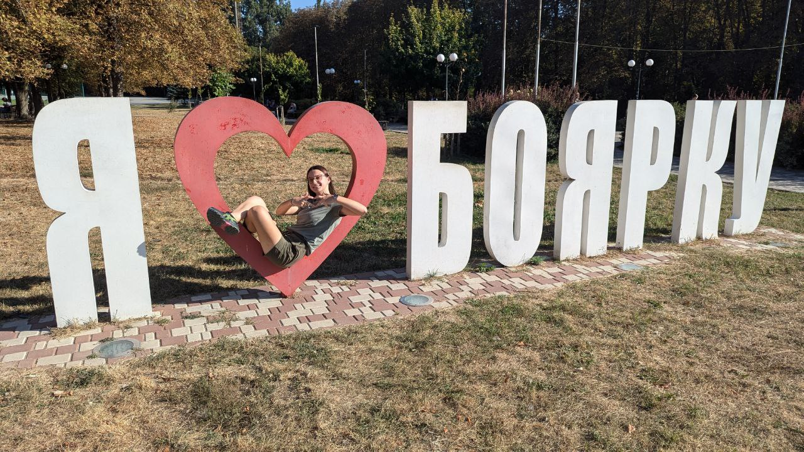

08.11.2004, місто Умань, Черкаська область, Україна
Школа №11 імені М.П. Бажана, м. Умань; НТУУ "КПІ", м. Київ
Найулюблене місто, в якому я колись бувала, це Боярка. Може прозвучати смішно, але я впевнена, що на все життя запам'ятаю це чудове місто, з його єдиною кав'ярнею "Лаванда", в якій навіть немає лавандового сиропу. Я пробула в цьому місті всього 5 днів, але я можу точно сказати, що за всі ці 5 днів я відчувала себе абсолютно щасливою через людей, які мене там оточували. "Свідомість визначає буття". І я можу з впевненістю сказати, що серед усіх міст, в яких я була, а їх налічується немалий список, приїзд в Боярку подарував мені неймовірні позитивні емоції.
